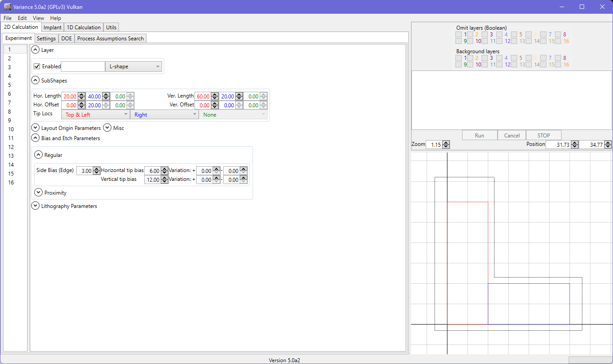
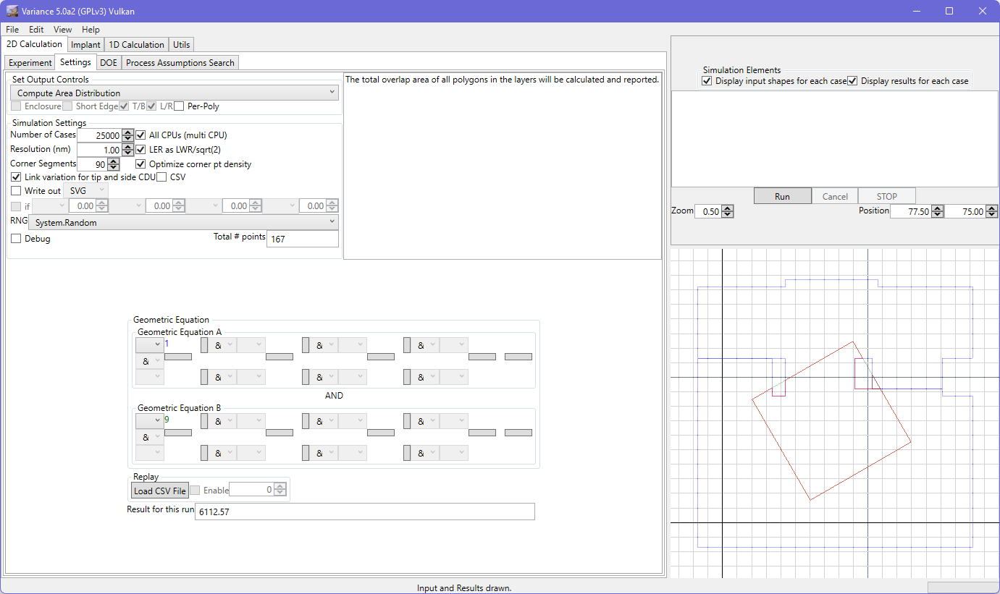

Bias and Etch Parameters
Side bias is applied to all sides of the shape that are not defined as tips.
Note that tips have a variation on their bias. The variation is split to permit positive and negative maximum variation values. Internally, a variation type random number for each type generated. A value < 0.5 causes a negative tip variation to be applied, otherwise a positive variation is applied. The variation is correlated if the tip and side CDU is correlated.

Proximity dependent bias is evaluated for each point on the layer. It is assessed after all other dimensional variations are applied (CDU, LER/LWR). For each point, a visibility calculation is performed. The initial ray is cast along the point's normal. The system also permits additional rays to be cast to the side. These rays are emitted at increments of (90 / number of side rays). Increasing the number of rays yields a more accurate result, but increases the calculation time for the shape. Note, as below, that keyholed geometry may result due to overlaps. This keyholed representation is required for some of the calculation approaches to work successfully. The keyhole is positioned to minimize mathematical errors in each case.
Note that artifacts and asymmetry can arise from insufficient rays being used, as shown below. Work continues to improve the algorithm, but this is something to be aware of in the current approach.
As noted earlier, keyholed geometry is created in case of fully enclosed holes in the geometry. Using keyholed geometry in conjunction with proximity biasing may result in artifacts around the keyhole region, arising from the complex geometry. Also, note also that the keyhole insertion may be different from any evident in the 'drawn' case in these situations, arising from internal attempts to reduce mathematical errors.
Please also refer to the order-of-operations section to understand how lens distortion, proximity biasing and LER are applied in combination.
GDS/Oasis Note
Side CDU can be enabled for GDS/Oasis shapes, but should only be used with care. Biasing is performed uniformally to increase or decrease the shape boundary. This may not reflect the OPC contours (process) and could also lead to algorithm fails in case of self-intersections. A preference is available to enable/disable this setting for this type of geometry; projects loaded with side CDU for these types of layers will override this preference if it is off.
An effort is made to handle self-intersections (as shown below). The polygon fill type menu (defaulting to 'non-zero') allows for adjustments, but 'non-zero' will usually be correct. Note that there is no guarantee that the result will work with all calculation modes, however.
The keyholes generated from the overlap processing are also evident in the images below.

